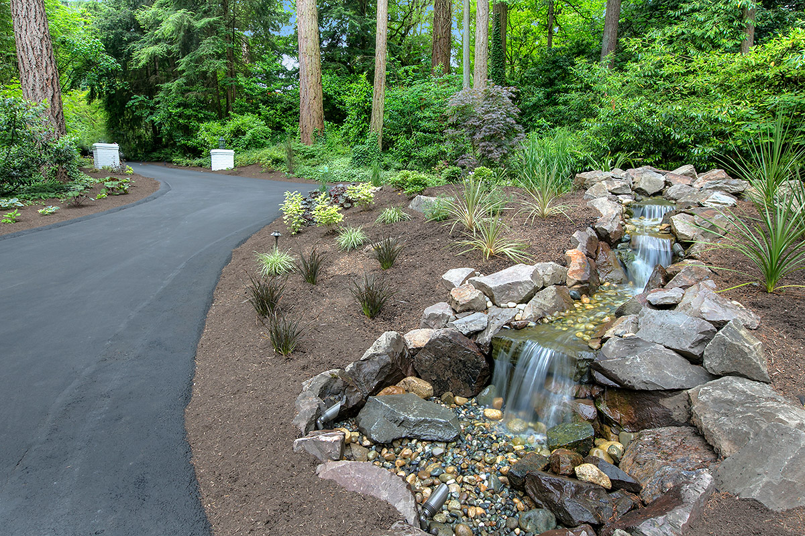
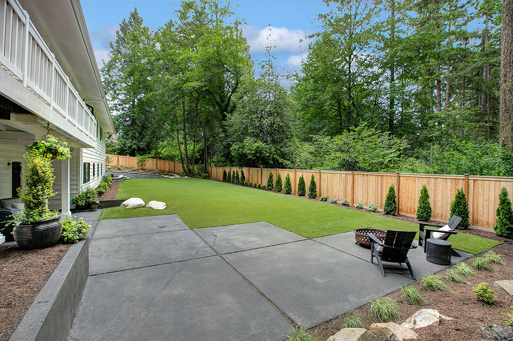
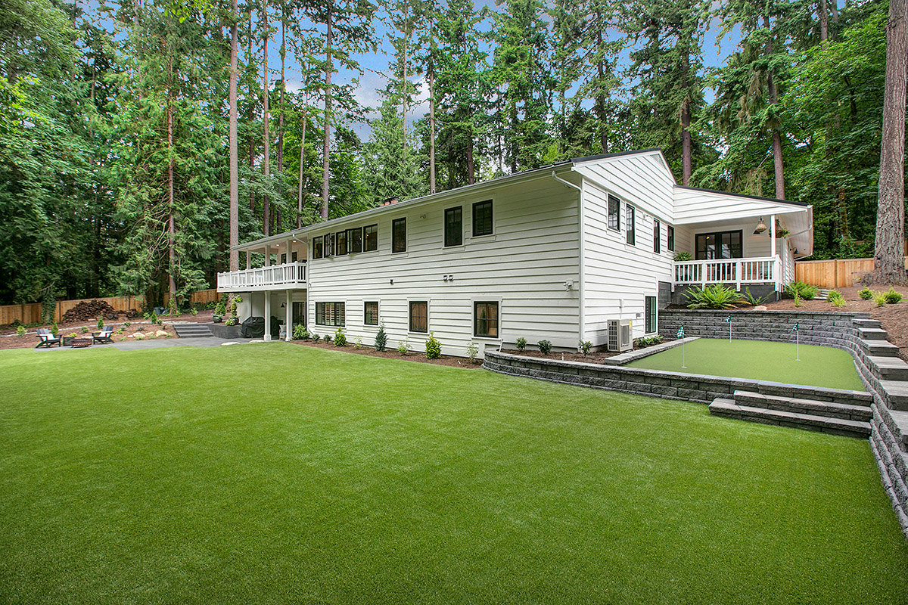
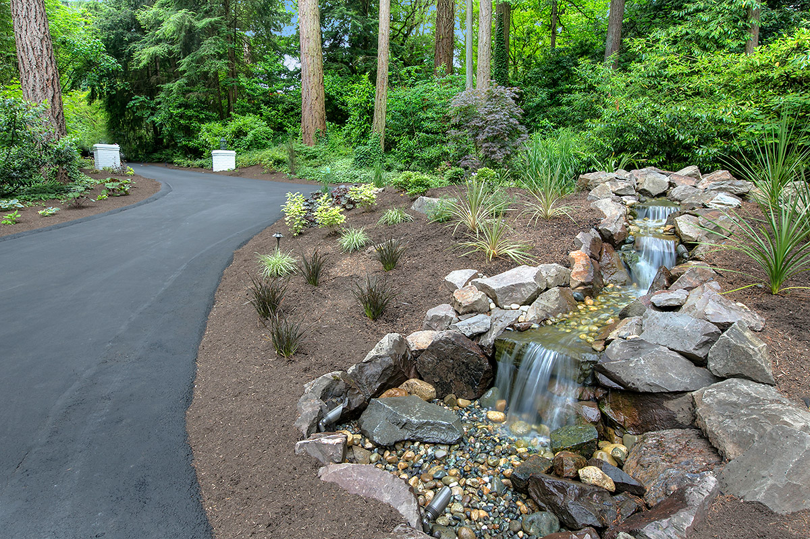
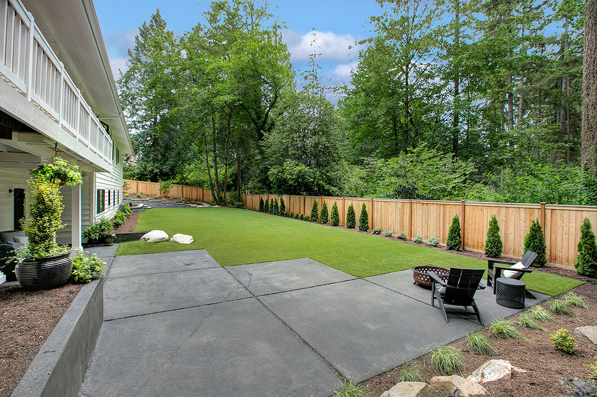
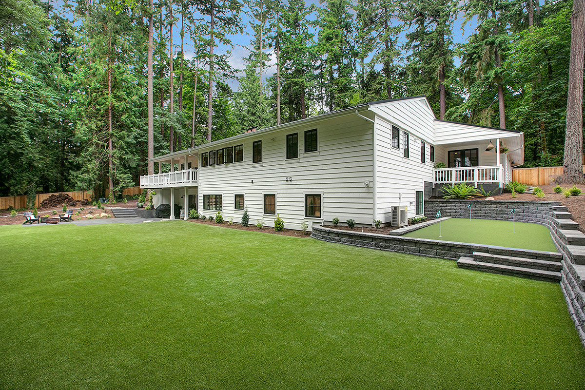

Nestled in the woods, Chris created endless eye-catching exterior features to bring the outside of this home to life. A custom water feature greets guests when they enter the property from the circle driveway. An inviting walkway, surrounded by lush landscaping, welcomes you to the expansive turf backyard. The custom putting green, surrounded by a paver retaining wall offers hours of entertainment for golfers of all skill levels to practice, compete and enjoy time outside.
- waterfall
- turf backyard
- putting green
- retaining wall
- plants
 




